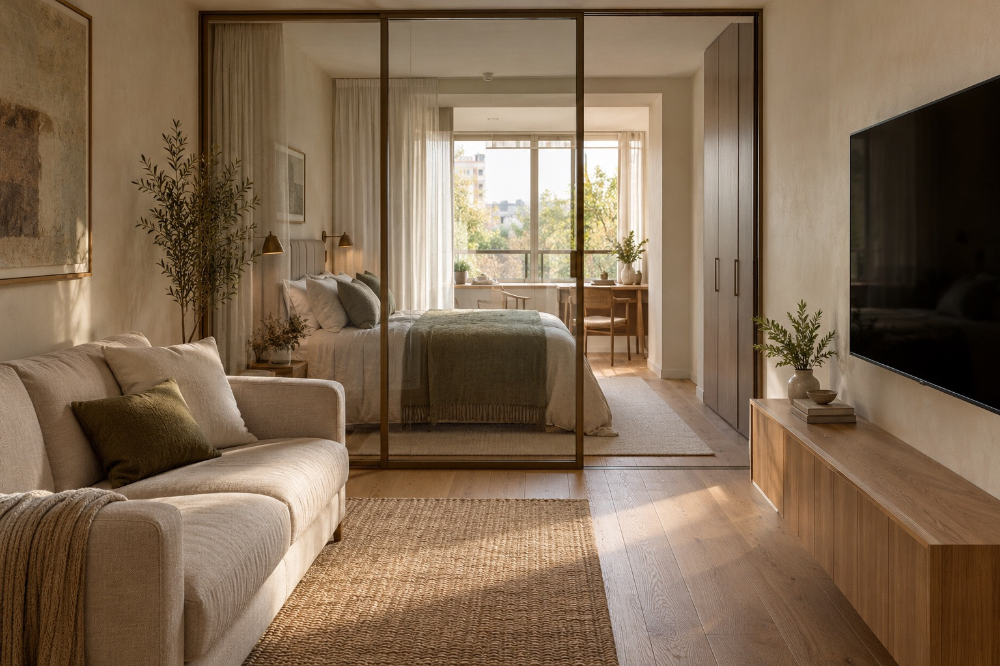

ЧТО ВЫИГРЫВАЕМ
Место для вашей жизни.
Пять продуманных сценариев для пары без детей.

Загрузка пространственной модели…
01
ВЕРХ ИСХОДНОГО ПЛАНА ↑
Существующие стеныНовые перегородкиСтеклоСвободная зонаОткрытая техникаУсловный демонтаж
КОМПРОМИСС
МЕБЕЛЬ ПОДЧИНЯЕТСЯ ЖИЗНИ
Место не только для мебели.
Стулья, техника и ограничения
Все стулья привязаны к столу и повёрнуты к нему. Кровать доступна с двух сторон. Проверка маршрутов использует тело шириной 60 см; это проверка геометрии, а не нормативов.
ПЯТЬ РАЗНЫХ ПРИОРИТЕТОВ
Что важнее именно вам?
| Решение | Для кого | Выигрыш | Компромисс | Открыть |
|---|
ОСНОВА ПРОЕКТА
Та же квартира.
Новая логика.
Жилая комната — 17,9 м², кухня — 9,1 м², прихожая — 9,4 м², санузел — 3,3 м², балкон — 5,4 м². Это подписи на исходном фото, а не площади восстановленной модели. Балкон учтён тёплым по вашим данным.
Размеры предварительные. Фото не даёт точного контура и статуса стен. В модели коридор к санузлу сужается примерно до 53 см; этот размер требует обмера в первую очередь. Мебелью такое узкое место не исправить.
Варианты 01–04 сохраняют существующие стены. Вариант 05 показывает условный проём: до обследования и проверки инженерии его нельзя считать допустимым. Несущие конструкции и фасадные простенки не предполагаются к сносу.
Что проверить до заказа мебели
Разбор планировок и использованные рекомендации IKEA / NKBA ↗
Фактический контур кухни и ниш, ширину коридора и всех проёмов, направление дверей, каркасы мебели, радиаторы, высоту подоконников, вентиляцию и тип плиты. Для зоны сна за стеклом — воздухообмен; для кабинета на балконе — температуру, солнцезащиту и розетки. Подводы к постирочной нужно подтвердить.
Изображения остаются референсами материалов, а не обновлённой расстановкой: они могут отличаться в деталях проёмов и декора. Размерная 2D-схема и 3D-модель используют один набор координат. Ни один вариант пока не является рабочим проектом.
 Открыть исходный план ↗
Открыть исходный план ↗